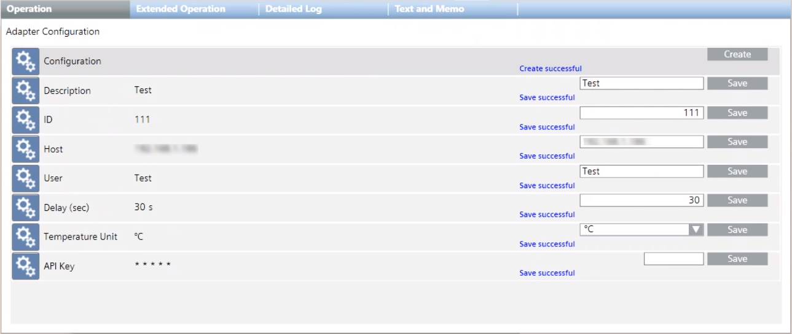

Set the Energy Managers
You can configure multiple energy managers under one SORIS Enlighted adapter.
- In System Browser, select Project > Field Networks > [SORIS network] > [Enlighted adapter] > Configuration > Adapter Configuration.
- For each energy manager, in the Operation tab, specify the following parameters:
- Next to the Description property, enter a descriptive text for the energy manager, and click Save.
- Next to the ID property, enter the energy manager identifier, and click Save.
NOTE: This identifier must be a unique value. It is an internal identifier that can be freely assigned in Desigo CC since it is not to be taken from the energy manager. - Next to the Host property, enter the IP address or the hostname of the energy manager, and click Save.
NOTE: Since it is not the URL that is required, if you enter the hostname, do not include the https:// prefix in the name. For example, ENL-siemens.enlightedinc.com. - Next to the User property, enter the user that will query the manager, and click Save.
- Next to the Delay (sec) property, enter the polling interval of time in seconds, and click Save.
- Next to the Temperature Unit property, select the appropriate unit of temperature (°F or °C), and click Save.
- Next to the API Key property, paste the given unique user API code identifier (see Retrieve User API Key), and click Save.
